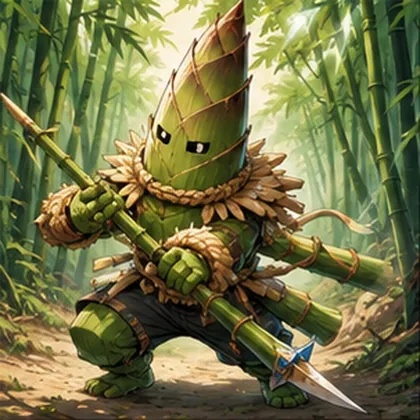
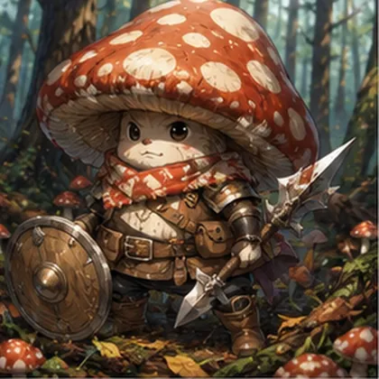
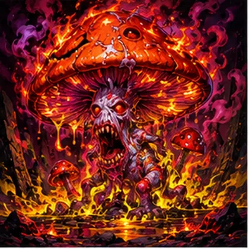
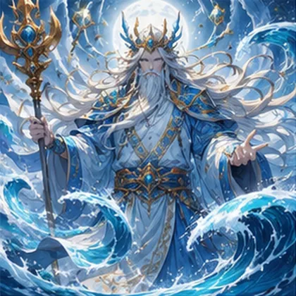
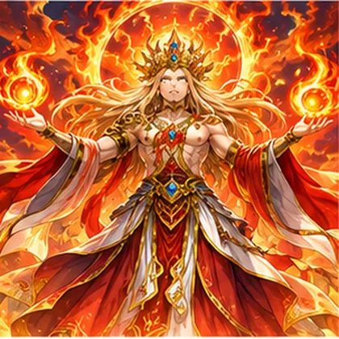
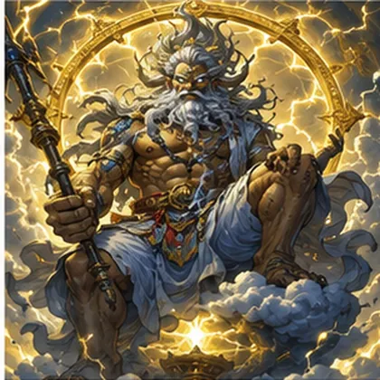
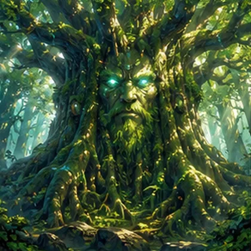
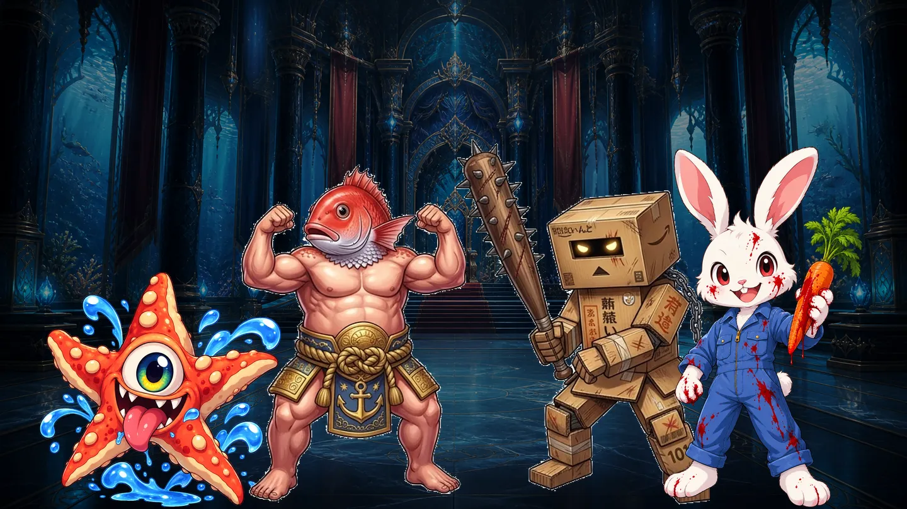
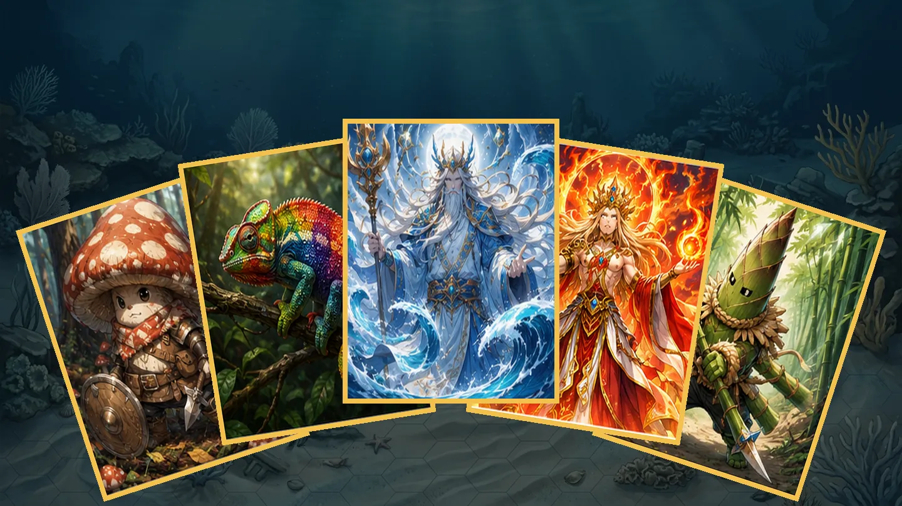

サイコロで盤面を巡り、止まった土地にモンスターを召喚して陣地にする。人の土地に止まったら、通行料を払うかバトルで奪うか。40枚のデッキで目標の総資産を目指すボード×カードバトルです。








盤面を巡って、陣地を広げる
止まった土地にモンスターを置けば自分の陣地。同じ属性の土地をそろえるほど価値が上がり、通行料も重くなる。他人の土地では、払うか、殴り込むか。

クセの強い連中と、全14ステージ
ヒトデ、暴君マダイ、ウサギン、そして黒幕のダンボール男。会話シーンを挟みながら進むストーリーモード。クリアしたステージは、違う顔ぶれ・違うルールで再戦できます。

集めて、組んで、育てる
対戦の報酬やパック購入でカードを集め、40枚のデッキを自由に編成。パーツを付け替えて自分専用のモンスターを作る「ブリード」もあります。
はじめかた
- ページを開いて、スマホならホーム画面に追加して横持ちに
- IDとパスワードを決めてキャラメイク（メールアドレスは不要）
- 初期デッキを選んで、ストーリーかCPU戦へ
遊ぶ前に
- ジャンル
- ボードゲーム×カードバトル
- 人数
- 1人（ストーリー・CPU戦）／オンライン2〜4人、4人同盟戦
- 端末
- スマホ（横持ち・ホーム画面に追加がおすすめ）、PC
- 登録
- IDとパスワードを決めるだけ
- 料金
- 無料
カルドセプトへのオマージュとして作った、非公式の個人制作です。元の作品・企業とは関係ありません。本家もぜひ遊んでください。